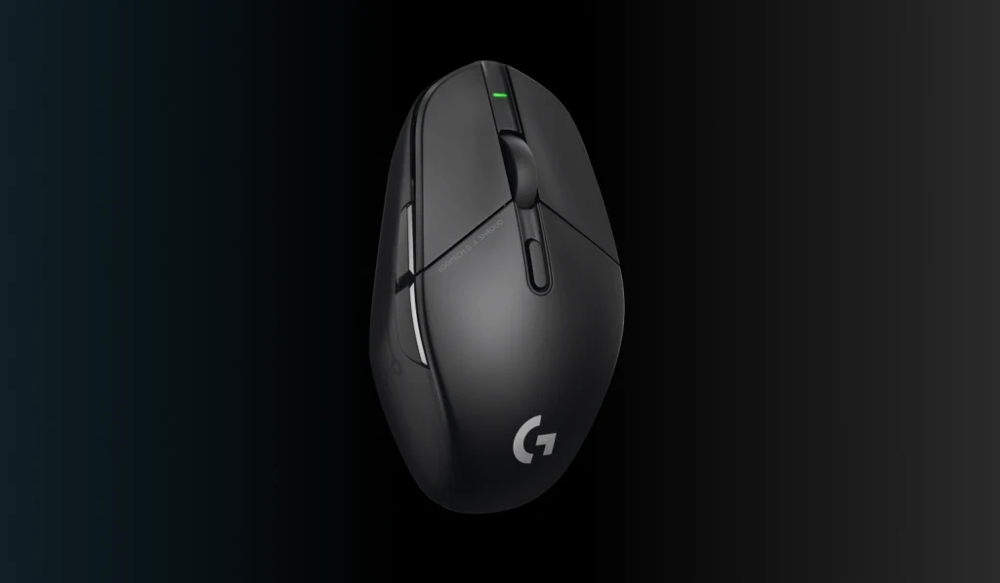

극강의 퍼포먼스.
더욱 빠르게 돌아오다.
8배의 속도로 경쟁을 압도하세요.
매 초당 최대 8000개의 데이터 전송으로 최소 8배 빠른 속도를 경험해보세요. 커서의 움직임에 일관성이 없고 미세한 끊김이 발생할 수 있는 낮은 폴링레이트의 마우스들과는 달리 극도로 부드러운 커서 움직임을 보장하며 이는 높은 화면 재생률의 모니터에서 더 확실하게 확인할 수 있습니다. 플레이를 고려한 무게
75g에 불과한 RGZ 11X PRO GAMING MOUSE는 가벼우면서도 튼튼합니다. 저감도 DPI와 잘 맞으며 더 빠른 조준을 가능하게 하여 게임플레이를 업그레이드합니다.